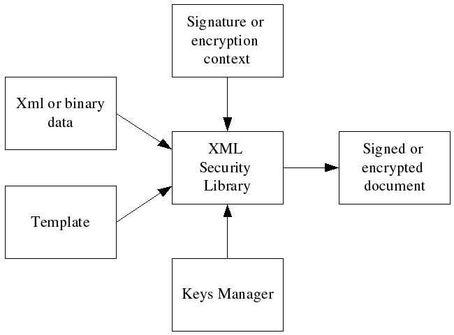
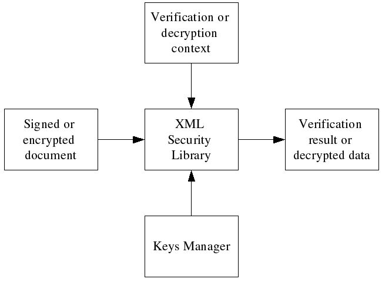
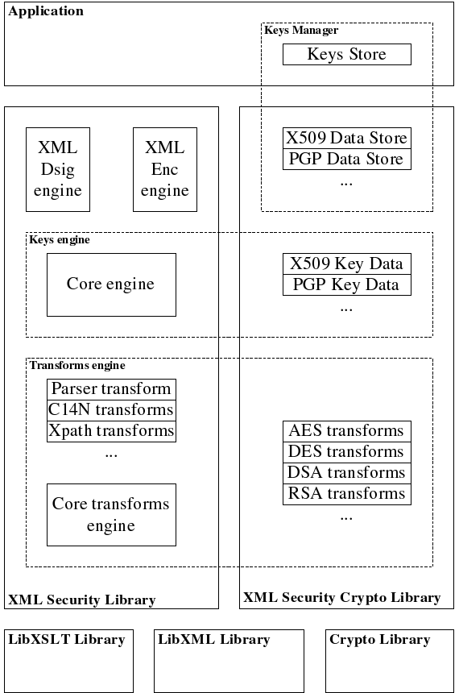
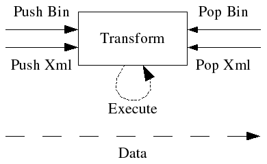
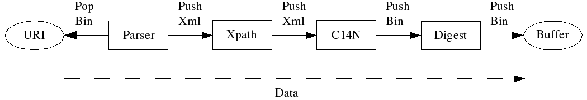
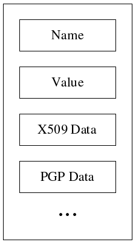
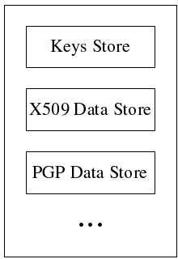

XML Security Library 0.1.x
Design Overview
0. Design goals.
The XML Security Library 0.0.X was designed with a goal to provide high performance
implementation of the XML Digital Signature and XML Encryption specifications.
It was limited to OpenSSL crypto engine but it quickly turns out that changing
crypto engine for XML Security Library users is very difficult. There are
many political and technical reasons why particular crypto engine could not
be used in particular organization. The "OpenSSL and only OpenSSL" restriction
was a serious limitation for the library and the major goal of the new XML
Security Library 0.1.X series is to provide an easy way to use integration
with crypto engine. Of course, performance is still a P0 requirement.
1. Processing model.
XML Security Library performs signature or encryption by processing input
xml or binary data and a template that specifies a signature or encryption
skeleton: the transforms, algorithms, the key selection process. A template
has the same structure as the desired result but some of the nodes are empty.
XML Security Library gets the key for signature/encryption from keys managers
using the information from the template, does necessary computations and
puts the results in the template. Signature or encryption context controls
the whole process and stores the required temporary data.

Since the template is just an XML file, it might be created in advance and
saved in a file. It's also possible for application to create templates without
using XML Security Library functions. Also in some cases template should
be inserted in the signed or encrypted data (for example, if you want to
create an enveloped or enveloping signature).
Signature verification and data decryption do not require template because
all the necessary information is provided in the signed or encrypted document:

2. Library structure and dependencies.
In order to provide the an ability to use different crypto engines, the XML
Security Library was splitted in two parts: core library (xmlsec) and crypto
library (xmlsec-openssl, xmlsec-gnutls, xmlsec-nss, ...):

The core library has no dependency on any crypto library and provides implementation
of all the engines as well as support for all the non crypto transforms (xml
parser, c14n transforms, xpath and xslt transforms,...). The XML Security
Crypto library provides implementations for crypto transforms, crypto keys
data and key data stores. Application is linked with particular XML Security
Crypto library (or even libraries). But the actual application code might
be general enough so switching crypto engine would be a matter of changing
several #include directives.
2. Transforms.
XML Digital Signature and XML Encryption standards are very flexible and
provide an XML developer many different ways to sign or encrypt any part
(or even parts) of an XML document. The key for such great flexibility is
the transforms model defined by these specifications. Specifications define
transform as a method of pre-processing binary or XML data before digest
or signature calculation/verification. XML Security Library extends this
definition and names "transform" any operation performed on the data: reading
data from an URI, xml parsing, xml transformation, calculation digest, encrypting
or decrypting. Each transform provides at least one of the following callbacks:
"push binary data", "push xml data", "pop binary data" or "pop xml data":

In order to simplify transforms development, additional "execute" callback
was added. This callback updates internal transform buffers and is used by
the "default" xml/binary push and pop callbacks. For example, most of the
crypto transforms could be implemented by just implementing one "execute"
callback. However, in some cases using push/pop callbacks is more efficient.
When necessary, XML Security Library constructs a transforms chain as specified
in the template or document and processes data by "pushing" or "popping"
through the chain. For example, then binary data chunk is pushed through
a binary-to-binary transform, it processes this chunk and pushes the result
to the next transform in the chain. The following transforms chain might
be constructed during digest calculation:

The XML Security library transforms engine makes sure that output data type
(binary or xml) of previous transform matches the input data type of the
next transform by inserting XML parser or default C14N when necessary. Custom
transforms could be added by the crypto plugin or application at any time.
3. Keys and keys data.
A key in XML Security Library is a representation of the <dsig:KeyInfo/>
element and consist of several key data objects. The "value" key data usually
contains raw key material (or handlers to key material) required to execute
particular crypto transform. Other key data objects may contain any additional
information about the key. All the key data objects in the key are associated
with the same key material. For example, if a DSA key material has both an
X509 certificate and a PGP data associated with it then such a key can have
a DSA key "value" and two key data objects for X509 certificate and PGP key
data.

XML Security Library has several "invisible" key data classes. These classes
never show up in the keys data list of a key but are used for <dsig:KeyInfo/>
children processing (<dsig:KeyName/>, <dsig:EncryptedKey/>, ...).
As with transforms, application might add any new key data objects or replace
the default ones.
4. Keys manager and keys data stores.
Processing some of the key data objects require additional information which
is global across the application (or in the particular area of the application).
For example, X509 certificates processing require a common list of trusted
certificates to be available. XML Security Library keeps all the common information
for key data processing in a a collection of key data stores called "keys
manager":

Keys manager has a special "keys store" which lists the keys known to the
application. This "keys store" is used by XML Security Library to lookup
keys by name, type and crypto algorithm (for example, during <dsig:KeyName/>
processing). The XML Security Library provides default "flat list" based
implementation of a simple keys store. The application can replace it with
any other keys store (for example, based on an SQL database).
Keys manager is the only object in XML Security Library which is supposed
to be shared by many different operations. Usually keys manager is initialized
once at the application startup and later is used by XML Security library
routines in "read-only" mode. If application or crypto functions need to
modify any of the key data stores inside keys manager then proper synchronization
must be implemented. In the same time, application can create a new keys manager
each time it needs to perform XML signature, verification, encryption or
decryption.
5. Data processing contexts.
Application may control XML Security Library engines behavior using several
context objects. New context objects are created for each operation and could
not be reused. XML Security Library also uses context objects to store temporary
data and return additional information to the application.